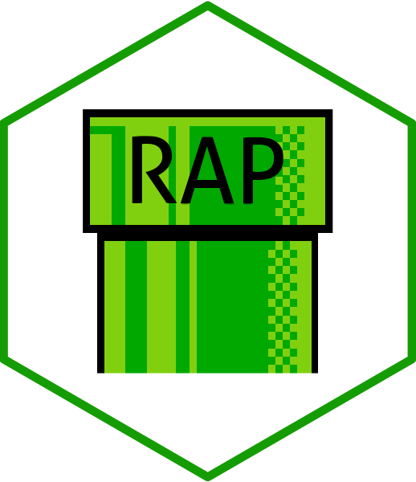
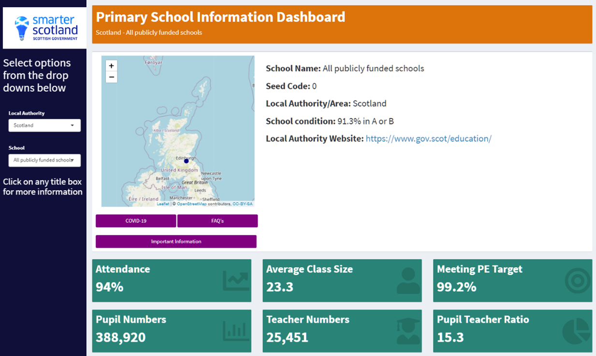

Reproducible Analytical Pipelines: How we saved 3 analysts 6 weeks of copying and pasting
This blog was originally published on the Scottish Government Statistics blog on 24 July 2023.
Like most analysts, I’ve spent a lot of time copying and pasting from spreadsheets, analysing data in laborious and manual ways with lots of potential for human error. This is why RAPs – Reproducible Analytical Pipelines – grabbed my attention when they were first introduced in Public Health Scotland (then the Information Services Division) when I was working there back in 2018.
What’s RAP?
If you’ve not come across RAPs before, they are automated analytical processes including everything from initial data extract, data cleaning, analysis and modelling to visualisation and reporting. What’s special about a RAP is that it’s designed to ensure reproducibility, quality and efficiency.
With RAP, analytical processes are written as version controlled code, using open-source software and with quality assurance built in. The RAP should also be peer-reviewed and publicly available where possible.
The Scottish Government is committed to embedding RAP in its analytical processes which is why I came to the Data Division in January 2023, to be part of the Data Innovation team offering RAP support across government.

Education statistics
My first project on joining the team was helping to develop a RAP for the production of the School Information Dashboards (SIDs) for Education Analytical Services.
When I got involved, their team of three analysts were spending around three weeks twice a year on getting the data and dashboards ready for publication. The majority of this time was spent copying and pasting figures between Excel files. That’s 90 days of highly labour intensive work, prone to human error, for a very busy team.
Laura Stott, the statistician leading the SIDs, was determined to change this. She’d already started teaching herself how to use R and Shiny, and had created mock-ups for the new look dashboards she hoped to create.
First – version control
We started by setting up a version controlled code repository and hosted this publicly on GitHub. Using version control software such as Git provides an audit trail of what changes have been made to the code, when they were made, why they were made and who made them. This means you no longer need to keep copies of previous versions of code ‘just in case’. If you need to revert to an old version, you can do this using Git.
Making code open on GitHub ensures your code and audit trail is available to anybody and also makes collaboration so much easier. For example, we used GitHub to facilitate code review throughout the project.
The importance of open-source software
An important principle of RAP is using open-source software, which is free for anybody to use. Using proprietary software such as SAS, Microsoft Excel, or Tableau means your analysis is not truly reproducible because you cannot run the process without owning a license. Although any open-source analytical software can be used for RAP, R is the most widely used and well supported in the Scottish Government, which is why we chose that option.
We didn’t want to just replicate the existing manual process in code
We also took the opportunity to step back to think about the most efficient and logical way to reach our goal, and not let ourselves be constrained by the existing approach.
Working backwards from the mock-up dashboards Laura had created, we worked out the best structure for the required data files and then how to create these from our input data using R code. We used Shiny to develop the dashboards, making sure to write our code as functions as much as possible to avoid repeating ourselves.
As co-chair of the Disabled Staff Network, Laura had a great understanding of digital accessibility requirements. We spent a lot of time ensuring our dashboards met those standards and in the process learned a lot about how Shiny can be used to do this. By prioritising accessibility, the user experience is improved for everyone.
Developing a RAP is not a linear process. It would often become clear after working on the Shiny code that a slightly different input data structure would work better. So we’d go back to the data wrangling code to make changes. We had regular code reviews throughout which led to good discussions and helped improve our approach. Everyone who was involved developed their technical skills massively during the project, including me!
90 days to 2 days
We had to invest a lot of time and effort to develop the RAP, but the benefits have been huge. The new RAP reduced the publication process from 90 working days to just 2 days. The dashboards are less error prone due to quality assurance being embedded in the code; they are visually simpler and therefore easier to digest; and they are accessible.

What happened next?
Towards the end of the project, Laura successfully secured a promotion to a different team. This meant we had to reprioritise and make decisions about which developments were essential to complete before she left. I’d recommend having more team members involved in projects like this so that skills learned are not lost from the team when a key member of staff leaves. However, the RAP process was so much clearer and better documented so it was much easier for her replacement to pick up.
Although Laura left the team, her skills have not been lost. In her new role, she is using R for everyday analysis and is planning another RAP project. She’s sharing her knowledge and learning with her new team and is a brilliant advocate for this way of working.
I’ve also made a new friend! I started working at the Scottish Government during the Covid-19 pandemic so hadn’t met many people from outside my immediate team. Working with Laura was great; it helped me learn about other teams in the Scottish Government and we bonded over our shared love of dogs and wine.
Here to help you
I’m really keen to hear from you if you work in analysis in the Scottish Government and have been thinking about implementing RAP. Our team currently has some capacity to support RAP projects, so you don’t have to do this alone. Drop me an email at alice.hannah@gov.scot and we can have a chat.
If you’re interested in learning more about RAP in the Scottish Government, have a look at the open projects in our Data Science Scotland GitHub organisation.
Finally, you can view the School Information Dashboards at: